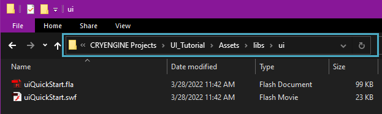
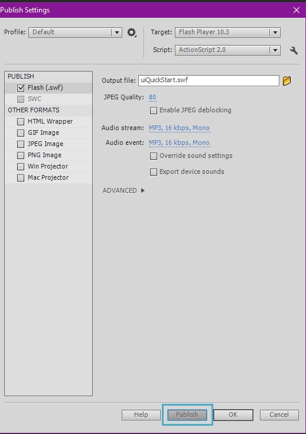
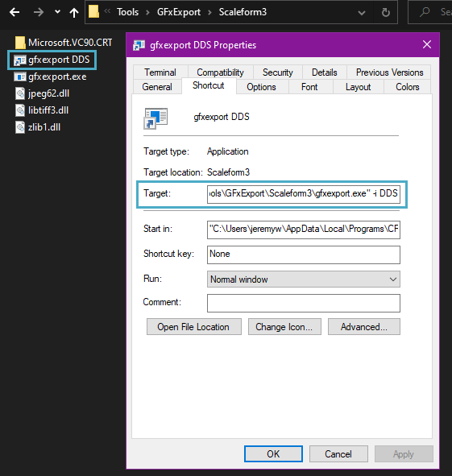
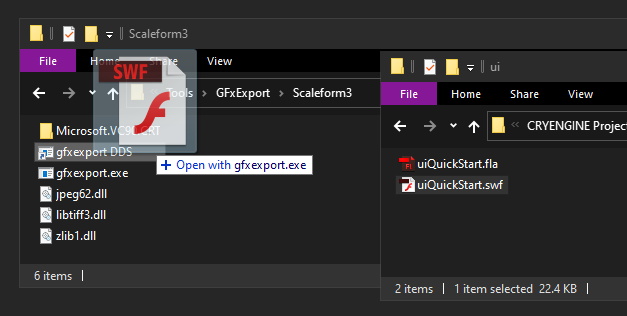
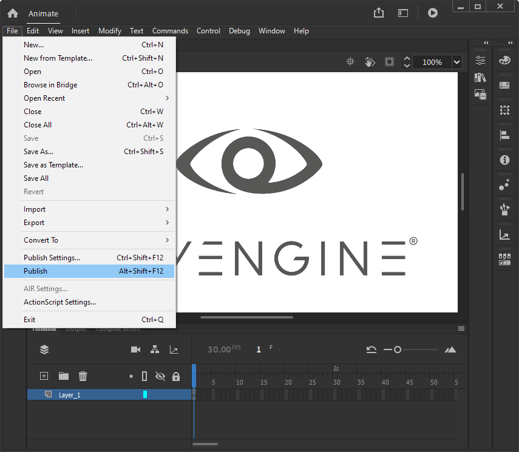
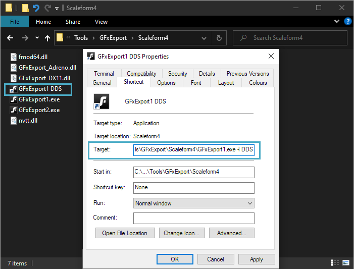
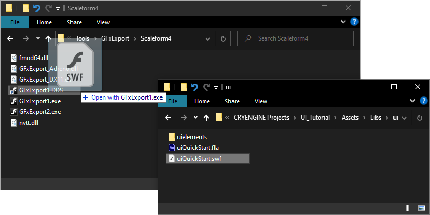

Компиляция GFx
По умолчанию мы будем использовать экспортер GFx для компиляции нашего файла SWF; экспортер GFx находится в Инструменты папка установленной вами сборки CRYENGINE.
Большие пакеты можно объединить в один файл SWF, чтобы разместить почти все функциональные возможности вашей игры в одном GFx, но также полезно разбить их на отдельные элементы, чтобы сделать их еще более управляемыми.
Следует отметить, что по умолчанию экспортер GFx генерирует файлы TGA для растровых изображений, используемых в вашем проекте Flash. Это приведет к нежелательному эффекту потребления большего количества ресурсов, чем было бы в противном случае использовано более подходящим форматом изображения, таким как DDS.
К счастью, есть переключатель флага, который можно использовать с инструментом экспорта GFx, который позволяет процессу генерации выводить для нас файлы DDS. Ниже описан рабочий процесс этой процедуры.
Шаги по сохранению и компиляции GFx
Масштабная форма 3
Начните с сохранения Flash-файла в папке UI вашего проекта, например: <root>/Assets/libs/UI.

библиотеки/UI- Убедитесь, что у вас есть файл SWF из источника FLA, используя процедуру публикации в Adobe Flash Editor.

Публикация файла SWF из источника FLA - Затем создайте собственный ярлык для gfxexport.exe файл, чтобы он генерировал все необходимые изображения, используемые в вашем Flash-проекте. Добавить
-i DDSдо конца нового ярлыка Целевой путь (после последней кавычки).
Добавьте -i DDS в конец целевого пути ярлыка. Затем вам нужно перетащить файл SWF на новый ярлык, чтобы создать файл GFx и все необходимые изображения.

Перетащите файл SWF на новый ярлык.
Инструмент экспорта GFx для Scaleform 3 можно найти по адресу <root>/Инструменты/GFxExport/Scaleform3/gfxexport.exe.
Масштабная форма 4
- Начните с сохранения Flash-файла в папке UI вашего проекта, например: <root>/Assets/Libs/UI.
библиотеки/UI - Убедитесь, что у вас есть файл SWF из источника FLA, используя процедуру публикации в редакторе Adobe Animate.

Публикация в Adobe Animate - Затем создайте собственный ярлык для GFxExport1.exe файл, чтобы он генерировал все необходимые изображения, используемые в вашем проекте Animate. Добавить
-i DDSдо конца целевого пути нового ярлыка (после последней кавычки).
Целевой путь Затем вам нужно перетащить файл SWF на новый ярлык, чтобы создать файл GFx и все необходимые изображения.

Перетащите файл SWF на новый ярлык.
Инструмент экспорта GFx для Scaleform 4 можно найти по адресу <root>\Tools\GFxExport\Scaleform4\GFxExport1.exe.